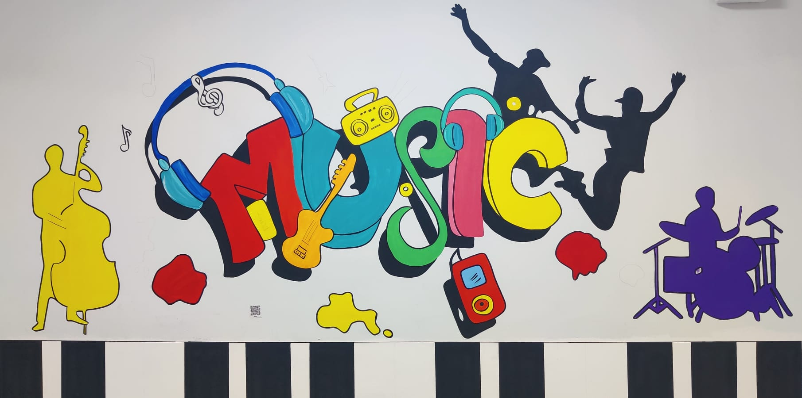

KÜLTÜR SANAT
MÜZİK
Seslerle kurulan ortak duygu dili
Müzik, insanlık tarihinin en eski ve en evrensel sanat dallarından biridir. İnsanlar çok eski zamanlardan beri sesleri ritme, ezgiye ve anlamlı bir düzene dönüştürerek duygularını ifade etmiştir. Bazen bir ninniyle sevgi anlatılmış, bazen bir ağıtla acı paylaşılmış, bazen bir marşla ortak bir heyecan güçlendirilmiştir. Bu nedenle müzik, insan yaşamının hemen her alanında yer alır.
Müzik, sözcüklerin yetmediği durumlarda da duyguları aktarabilir. Bir melodi, insanı geçmişte yaşadığı bir ana götürebilir; bir ritim, bedeni harekete geçirebilir; bir ses, huzur ya da heyecan verebilir. Müzik bu yönüyle yalnızca kulağa değil, hafızaya ve bedene de seslenir. İnsanlar müziği dinlerken, söylerken ya da çalarken ortak bir duygu alanında buluşur.
Her toplumun kendine özgü müzik kültürü vardır. Türküler, halkın yaşam deneyimlerini ve duygularını taşır. Klasik müzik, uzun bir eğitim ve bestecilik geleneğini yansıtır. Popüler müzik, döneminin ruhunu ve genç kuşakların sesini gösterebilir. Caz, rock, rap, elektronik müzik ya da geleneksel müzik türleri; farklı zamanların, toplumların ve duyguların müzikte nasıl şekillendiğini gösterir.
Müzik eğitimi, öğrencilerin gelişimi için çok değerlidir. Ritim duygusu, dikkat, dinleme becerisi, birlikte çalışma ve sabır müzik yoluyla güçlenebilir. Bir koro içinde şarkı söylemek ya da bir grup içinde enstrüman çalmak, bireye başkalarıyla uyum içinde hareket etmeyi öğretir. Müzik, yalnızca bireysel bir yetenek değil, aynı zamanda paylaşma ve birlikte üretme alanıdır.
Müzik, kültürler arasında köprü kurma gücüne de sahiptir. Dili bilmediğimiz bir şarkı bile bizi etkileyebilir; çünkü sesin duygusu evrenseldir. Bu nedenle müzik, farklı toplumların birbirini anlamasına yardımcı olur. Bir ezgi, bazen uzun bir konuşmadan daha hızlı biçimde kalbe ulaşabilir. Müzik bize, insanların farklı diller konuşsa da benzer duyguları paylaşabileceğini hatırlatır.
Müzik, sözcüklerin yetmediği durumlarda da duyguları aktarabilir. Bir melodi, insanı geçmişte yaşadığı bir ana götürebilir; bir ritim, bedeni harekete geçirebilir; bir ses, huzur ya da heyecan verebilir. Müzik bu yönüyle yalnızca kulağa değil, hafızaya ve bedene de seslenir. İnsanlar müziği dinlerken, söylerken ya da çalarken ortak bir duygu alanında buluşur.
Her toplumun kendine özgü müzik kültürü vardır. Türküler, halkın yaşam deneyimlerini ve duygularını taşır. Klasik müzik, uzun bir eğitim ve bestecilik geleneğini yansıtır. Popüler müzik, döneminin ruhunu ve genç kuşakların sesini gösterebilir. Caz, rock, rap, elektronik müzik ya da geleneksel müzik türleri; farklı zamanların, toplumların ve duyguların müzikte nasıl şekillendiğini gösterir.
Müzik eğitimi, öğrencilerin gelişimi için çok değerlidir. Ritim duygusu, dikkat, dinleme becerisi, birlikte çalışma ve sabır müzik yoluyla güçlenebilir. Bir koro içinde şarkı söylemek ya da bir grup içinde enstrüman çalmak, bireye başkalarıyla uyum içinde hareket etmeyi öğretir. Müzik, yalnızca bireysel bir yetenek değil, aynı zamanda paylaşma ve birlikte üretme alanıdır.
Müzik, kültürler arasında köprü kurma gücüne de sahiptir. Dili bilmediğimiz bir şarkı bile bizi etkileyebilir; çünkü sesin duygusu evrenseldir. Bu nedenle müzik, farklı toplumların birbirini anlamasına yardımcı olur. Bir ezgi, bazen uzun bir konuşmadan daha hızlı biçimde kalbe ulaşabilir. Müzik bize, insanların farklı diller konuşsa da benzer duyguları paylaşabileceğini hatırlatır.
Anahtar Kavramlar: Ritim, melodi, duygu, kültür, birlikte üretme
Düşündüren Soru: Sözlerini anlamadığımız bir şarkı bizi neden etkileyebilir?